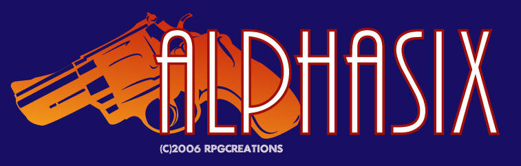
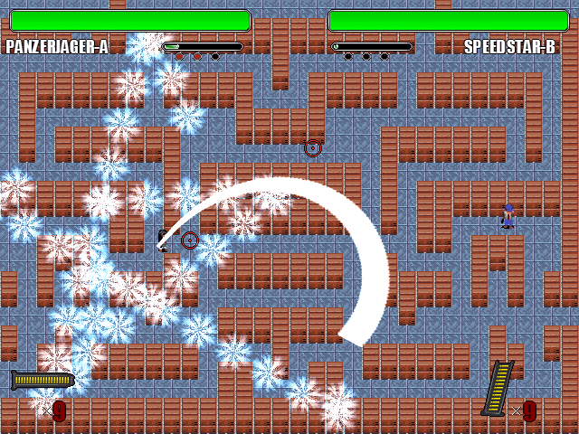

|

|
| PRE-POSTMORTEM This
game isn't "complete" and so this isn't a postmortem -- it's a
pre-postmortem. But the purpose is the same: to give the reader insight
into the game's development, and to summarize what I learned from that
experience. I have no illusions that this will be interesting to
everyone: the vast majority of you should skip this, it is really only
of interest to other amateur game developers, and probalby not even to
most of those.
|
|
DEATHMATCH... GO!
Orchard-L in the darkness of winter had a delightful idea for a game, and told it to me, in late December 2005 in our mIRC channel (#rpgcreations on irc.esper.net). The idea: a top-down 1 vs. 1 action game, involving traps. Besides this idea, he had five portraits drawn (the five characters originally had different names), an intro (never actually used in the game, you can see it here), and a mock-up screen of the gameplay and GUI (left). I agreed to make the game for the Game Maker -- our first Game Maker game (we came out of the dark world of the OHRRPGCE). I agreed because I could learn how to use the Game Maker by making this game, because I could improve my game development skills (I'd never made an action game before), and because it sounded like something that could be made relatively quickly (relative to a RPG or an adventure game). The game was to be an odd mix of genres: I once described it as Spy vs. Spy (NES) meets Street Fighter 2 meets Smash TV. With that in mind, we began the battle to create this game, starting it almost on New Year's Day. |
|
ROUND 1!
The first thing we decided on was the aiming system: it would use a system similar to Magecraft (another Game Maker game) and Tango Strike (a Multimedia Fusion game), where you use the mouse to aim and fire and the keyboard to move and trigger special abilities. This system is very important to Alphasix, and it wouldn't be the same game without it. As I mentioned, Orchard-L had created a mock-up screen shot which was incredibly useful during the first part of the game's development. The mock-up used the actual graphics that were going to be in the game (aside from the sprite which was later replaced) and looks much like how the game actually wound up looking. I highly recommend this and plan to use this idea again. Thanks to the mock-up screenshot and a small (about five page) design document Orchard-L provided me with, I got the basic mechanics of moving, shooting, running, and so on, the level and its wallmaps, and the basic GUI (the life bars, heads up display, timer) set up in the first few days. The excitement of a new game usually increases my productivity. Basically what I did was study that screenshot of a game that didn't yet exist, and create the game that it was a screenshot of. The first major challenge for me was to get the enemy moving, and this the rest of the first week. The GM comes with path-finding algorithms, several different kinds, but they're not really full-featured. I did wind up using them, but I had to experiment quite a bit, and create a system whereby the enemy alters the pattern it uses every few seconds (this is necessary to avoid it getting stuck in a simplistic pattern that the player could take advantage of). I by no means did all of the movement AI during this phase, but I did get enough that the opponent would approach the player and then circle him, and go around walls in his way. During the second week I implemented the game's first (with many to come) unplanned feature: that the enemy would vanish when he's out of your line of sight, and that you would vanish to the enemy AI when you were out of his. This added a bit of complexity to the game and was a good design decision. I made it so that the enemy would *think* you were at the last place it saw you, for a few seconds, and then look for you, and if it didn't find you soon it'd get confused and start looking for you at each of the level's "navigation points", walking between each of them at random. During the third, fourth, and fifth weeks I began adding a large number minor but time-consuming and necessary features, such as reloading, the introduction sequence, getting the stage and character select screens working, getting MOD music working by implementing a dll library, differentiating the characters in terms of bullet speed and other charactersitics, making the crates destructable, and dozens more. I had a large feature list of these and basically took them in an arbitrary order (because they were a large collection of unconnected features so no real order was possible). At about this time Charbile finished the character sprites: there are five characters, and although they're small (about 20x28 pixels) each character has 88 frames, so this took a bit of time to get integrated into the game in a fluid fashion. The sixth and seventh weeks were largely spent on "action" AI as opposed to simply "movement" AI. The AI could now plan what to do next, and there were a variety of plans it could decide among. The AI of the game, despite being pretty and sometimes incredibly stupid, actually makes up a huge chunk of its code, about a sixth of its 13,000 lines or so. I also created a hidden "final level" of the game at this time (which appears only on the hardest difficulty), sort of as an accident. I didn't expect four computer opponents accidentally placed in the same level to actually *work* as well as it did (true, you could only harm the "actual" opponent, but I was surprised it didn't just crash or something). Weeks eight through eleven were spent on game balance, and on setting up "one-computer-two-player" mode, where one player uses the keyboard and the other the joystick. Once that was set up I played the game against my siblings, and the human vs. human game was considerably different from the human vs. AI game. As a result, I had to change a lot of the balance, and for every change, I had to adjust the AI to that change as well. I also added a few new features that my siblings suggested, such as health boxes. Week twelve was spent on improving the frames per second, which involved a number of tedious optimizations (such as switching from the Game Maker's tile engine to pure bmp level backgrounds, reducing the number of invisible walls, and all kinds of other things). Week thirteen was spent writing the NES-style manual, a surprisingly complex task. I wrote it, and Orchard-L illustrated it. We released the manual before releasing the game, as a teaser. So during the first three months of production, we created basically the entire core game. By March's end, the game was basically finished except for multiplayer coding (or so we thought), we put the game into playtesting, and we intended to release the game in mid April or so, after a (hopefully) quick integration of multiplayer code. Victory! |
|
ROUND... 2?
But we had only won that round. From the beginning the idea was to get this game playable online, so that friends could compete against eachother across the world. This still hasn't happened, because it turns out this type of game is very bad for online multiplay, and multiplay code is notoriously complex. I gave the game to Fyrewulff, who claimed he had experience with multiplayer coding, to see if he could get a multiplayer system working within the game. He spent over a month on it, all of April and a lot of May, and made little to no progress. When he showed me his progress at the end of that period, he had basically set up an auto-patching system (which we never used, and which I didn't ask for), and a laggy multiplayer ball-bouncing demo. During the time that Fyrewulff was working on the game's multiplayer code, I was playing voice director -- I had the interesting experience of trying to coordinate a voice-acting team who only knew eachother online. I'd never been involved in a game with voice acting before, so this was a strong learning experience. I wrote a list of things I wanted people to say into their microphone, sent it out to my volunteer online friends, and then waited, and waited, until they did, begging every other day or so. After I got all these samples (about a minute of a person saying each word in various ways), I then had to choose the best sample, edit them (I used Audacity), using filters to make them sound better (low pass filter became a favorite to rid the sample of static sounds). I'm not totally satisfied with the results, but I think it's okay for an amateur game and my first time making a game with voices. Deciding that the game was never going to get done in Fyrewulff's hands, I myself attempted the online multiplay code, beginning in very late April. I did make significant progress: you could now host or join a game, talk to eachother in a lobby while waiting to start the game, choose characters and transmit that information, start a game, and move around the map, but that's where the troubles came in: despite a lot of effort I couldn't get the two games to syncronize correctly as far as bullet hitting was concerned. I didn't know anything about multiplayer coding, so I never even heard of "dead reckoning" or similar topics, so I was trying to re-invent the wheel, and couldn't. Only much later did I read the excellent multiplayer tutorials out there (especially those on gamedev.net), but by then my taste for multiplayer code had soured and I was not happy about a *third* re-writing of the multiplayer code from scratch, especially because the first two attempts had wasted over a month's time each. Compounding that was this: while attempting to apply a third-party Game Maker dll to the game (one which handles compression and resource-loading), the dll malfunctioned and deleted the game. I lost several days of progress, as well as the game's to-do list and bug list, which I lost completely. I tried using undelete software to recover it, but no, they were completely gone. It's partly my fault for keeping the backups in the same directory that I kept the actual game (thus the backups were deleted too), but it was still quite the dismaying experience. So between March and the end of May, we made basically little to no progress of any kind in the game itself. We recorded the voices, but that really was only cosmetic, it didn't affect the gameplay. Oh, I added taunting, which was a neat, and I drastically reduced the amount of RAM tha game required (300 MB to about 90 MB) by loading files and sound samples from the hard disk only when needed, but overall round two was a miserable loss. I was also feeling very unproductive during this time and there were times when a week or two would go by without me touching the game at all. |
|
ROUND 3!
We counterattacked by adding a totally new feature to the game. During about this time Orchard-L and I were engrossed in what I still consider one of my favorite new game experiences of the year: Shoot the Bullet, by Japanese independent game developer Team Shanghai Alice. It's a "bullet curtain" or "danmaku game", in which you have to avoid waves upon waves of bullets in pretty patterns. So we had the idea for "bullet curtain" attacks within Alphasix, as special attacks. It was surprisingly easy to implement these, it only took about a week (in early June) to get the basic system working and another week to create and balance the 15 different attacks, and I really loved the results. Without danmaku attacks, this game would be much worse, so in retrospect I'm glad we didn't meet the original April release date. The game is two or three times better with danmaku attacks. This is how the game became Spy vs. Spy, meets Street Fighter 2, meets Smash TV, meets Shoot the Bullet. (Shown is a screenshot of the very first danmaku attack). In mid-June I experimented with lighting effects using the Luminaire engine (a Game Maker lighting), but ultimately decided against them. But you can see a screenshot of the game with lighting effects here. The lighting code is still in the game and I may use it in the future, but currently it's not used. So in mid-June or so Orchard-L and I decided to release the game without a multiplayer feature, and add that in later on, after we figure it out or have the will for a third attempt over that mountain. I put the game into its second and final found of playtesting, and sent it out to about 20 friends, in preparation for its release. BAM! Lots of complements, but also, lots of complaints, and most valid. Each new person who played it had an important suggestion to add, I am really glad I chose such a great group of playtesters. Its balance wasn't that great, the controls weren't very intuitive to figure out, on and on. Again, most valid, so I set about addressing each of these concerns, polishing the gameplay here, improving it there, increasing bullet speed here, increasing the speed of the thrown grenades there, and these minor tweaks took a lot of time, much of June and July. The largest improvement was a tutorial designed to teach you how to play the game -- seems our detailed manual wasn't enough, in-game help is pretty useful. Though the tutorial actually turned out to be more of a set of three mini-games than a true tutorial, I hope at least it'll be useful for introducing new players to the controls in a non-threatening manner (okay, you can die in the first tutorial... but in a non-threatening way!). During late July and early August a lot of time was spent upping the number of levels. 10 really wasn't enough, or so we thought, so we added 20 more, for a total of 30 -- most designed for multiplayer (human vs human), so in retrospect it wasn't that important of an addition. However, it was nice to design my own levels (the first 18 were created by Orchard-L, and the last 12 by me), it's easier to "see" your creative role in a game when you see your own levels in front of you, as opposed to your work being more in the background (code and such). During early August I thought the danmaku were too unvaried, and decided to triple the number of danmaku attacks in the game (just as I had recently tripled the number of levels). This was fun, doing the mathematics of these danmaku attacks and balancing them was probably the most fun part of creating the game for me. |
|
WINNER: ALPHASIX!
 Thank you for reading through this, even though I wrote it mostly to solidify in my mind that this game is finally over, for now at least. A few final thoughts. The game was originally going to be a lot more similar to Spy vs. Spy than it turned out being. Spy vs. Spy was hiding traps and avoiding the traps of the other player. The only thing that really remains of that idea is the line of sight system (where the opponent is invisible to you if he's out of your field of vision), Alphasix's mine special ability, and Sixshooter's ability to detect enemies outside of her line of sight. I'm not really a programmer, but really improved my programming ability through this game; I continually impressed myself with how fast I was able to implement something, how fast I was able to identify the cause of bugs, and how many features worked the first time I tried them (which almost never happened with me on previous projects). I think the reason was that I wasn't concerned with *improving* the game, I was simply trying to implement Orchard-L's vision for the game, so, at least during the first three months, I didn't over-optimize, I didn't go on side-tracks, and I usually stayed on the topic of whatever it was I was trying to implement. As for the game's quality itself, it's fun, but not deep; it's innovative, but not revolutionary. It's an entertaining retro game that reminds one of the NES/SNES days. But that was intentional. It was our first Game Maker game, so we wanted to learn the engine, but at the same time create something that was more than a learning exercise (you learn best from things which have a point beyond learning, I've found). THE GOOD 1. Combining genres or creating new ones is always more interesting than creating a game in an old genre. Like Deus Ex (which I'm not comparing the quality of this game to), we looked at a bunch of different genres, took elements from several, and wove a hybrid genre. Traps from Spy vs. Spy, a basic fighting system setup from the fighting game genre, a rarely used mouse aiming system from games like Cannon Fodder, a joystick shooting system from Smash TV, and danmaku attacks from Shoot the Bullet. 2. Creating that early mock-up game screen. When you create screenshots of a game which doesn't yet exist, and build the game until it resembles those screens, it proceeds faster than expected. A corollary: creating a good deal of the graphics for the game before you start coding it really helps. 3. The playtesters were a great help, I have a great set of friends who are very knowledgeable about videogames and intelligent folks (most are skilled artists in varous genres -- novelists, comic artists, visual artists, and other amateur game developers), their comments on the game were very to-the-point and helpful. 4. Contrariwise, another thing we did right was keeping the team small. Besides the sprite artist (who was only involved with that) and the playtesters and voice actors, it was just me and Orchard-L, and we got along well. This had several benefits: we didn't have to explain everything to too many people, "meetings" didn't have to wait on everyone being there, communication was much quicker than it would have been even with one additional person, and decisions could be made quickly due to not having to convince everyone that a new feature was a good idea. 5. The geometry I learned in high school (or refreshed my memory with through the internet) came in very handy for this game: I used it in many places throughout the game, which wasn't really true of my previous games. It's really important when coding a spatical action game to be able to think geometrically. THE BAD 1. A mistake was using 20x20 tiles and 20x24 sprites in 640x480 resolution. Orchard-L was used to OHRRPGCE tile sizes, and recycled a few tiles from earlier games, leading to the impression (virtually universal) that the sprites and tiles were too small for the resolution. This is one of my biggest regrets about this game, but there's also a small benefit of having sprites that are too small: the game focuses on the bullets patterns instead of the sprites, much like spaceship shooting games and "danmaku" games, both of which tend to have very small sprites. 2. We should have built the game from the beginning with multiplayer code in mind, and I should have much earlier read the various excellent multiplayer code tutorials that exist online. Attempting to add it to the game later on, after the game was basically finished, was a very bad idea. 3. I didn't like that we didn't use original music for this game. We did what the Game Maker game Seiklus did: browse through a MOD music site and pick some music which we thought would work well with the game. I still plan to replace it if I can get a musician who knows how to write music in that format, or if I ever learn music that format myself. 4. This is not actually a bad thing from the game's perspective, but I stopped working on two other games in order to make this game. Everything you create has a cost: and that cost is what you could have made during that same time period and did not. Was this the absolute best thing I could have created in 2006? I had other promising game designs in a partial state of completion that I dropped to work on this game, and though I now plan to return to those, was this the right order to create them in? I think it might be, but we'll never know. 5. I didn't use "feature locking" at all -- meaning I continuously drastically changed every little aspect of the game as an improvement popped into my mind even up until a few hours before release. This had the consequence of creating a lot of unwanted bugs and requiring that everything be continuously rebalanced. In retrospect I should have obeyed the "if it's not broken, don't fix it" rule more often. |
|
VITAL KNOWLEDGE & TRIVIA
Name: Alphasix Group: Radical Poesis Games & Creations Website: http://www.studioeres.com/games Release date: August 20th 2006. Intended platform: Windows 95/98/XP (because Game Maker only supports Direct X). Project length: 8.75 months (a pregnancy which was one week premature). Team size: 2 core developers, 1 supporting artist, 5 voice actors, about 20 playtesters. Development software: Game Maker, Paint Shop Pro (version 3!), Neopaint, MS Paint (!?), Audacity. Lines of code: 13,000 Game font: Impact Return to the manual. |
{kind=link}
{kind=link}
{kind=link}
{kind=link}
{kind=link}
{kind=link}